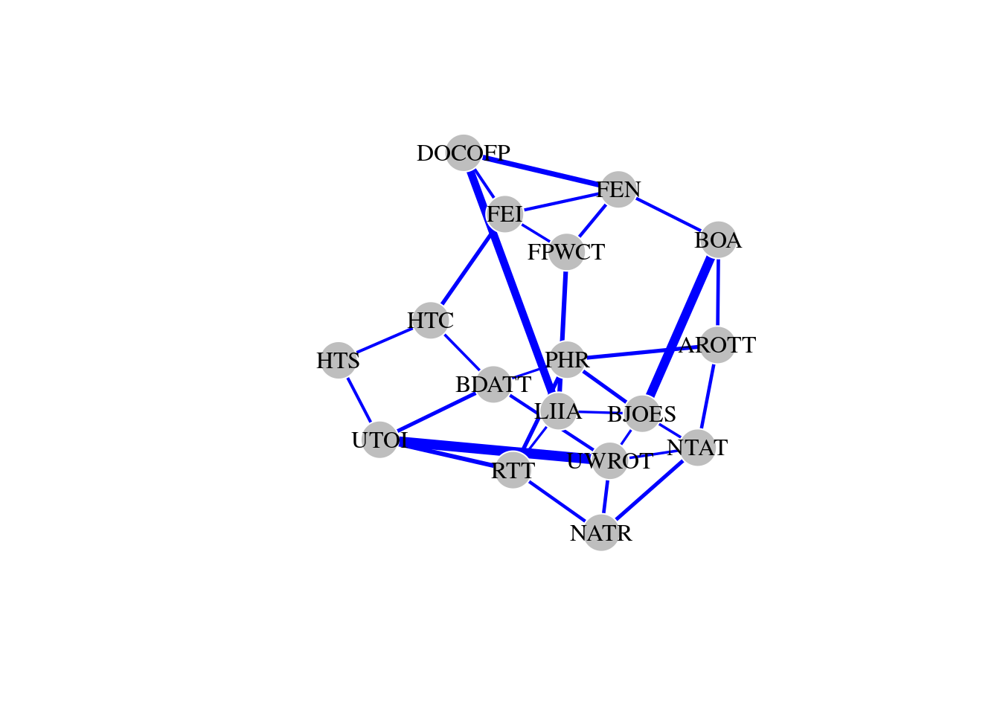

Chapter 13 Chapter 13: bootnet package
Psychometrics is the science of psychological measurement. It attempts to measure psychological constructs that are not usually directly observable. The core question in psychometrics is how to relate observable information (questionnaire responses, behaviors, test performance) to theoretical psychological constructs.
The underlying assumption is that the relationship between observables and psychological constructs is that of common cause. In other words, there is a hypothesized latent variable (representing the unobservable construct; e.g., intelligence) that causes or leads to the behaviors and responses that are observed (e.g., scores on Raven’s Progressive Matrices).
In recent years, a new area known as network psychometrics has developed and gained substantial attention among psychometricians. Instead of trying to uncover a latent variable from observable data, network psychometrics focuses on analyzing the patterns of covariances among observable data as a network representation. This enables researchers to leverage on the network science framework in order to quantify their structural properties.
For instance, Borsboom and Cramer (2013) argue that the complexity of psychopathology demands more sophisticated models that acknowledge its complexity. Traditional psychometric methods that assume a latent variable implicitly assume that clinical symptoms are caused by the disorder itself, but the evidence suggests that symptoms of mental disorders have reliable patterns of covariance that cannot be easily reduced to a single cause or latent variable. Instead of treating mental disorders as a “disease” that can be solved by finding the underlying cause(s) (i.e., the “disease” model in western medicine), psychometic network models view mental disorders as interactive systems of symptoms with reinforcing negative feedback loops and causal relationships.
13.1 Chapter outline
Throughout this book we have seen various examples of behavioral networks, and learned about the importance of clearly defining what the nodes and edges are representing. What are the nodes and edges of a psychometric network?
- Nodes: observed variables. In the example that we will work through, these would be the items on the survey that correspond to symptoms associated with post-traumatic stress disorder (PTSD).
- Edges: strength of association between the observed variables. For instance, the strength of the correlation of two symptoms in the PTSD symptom list. This information has to be estimated from the data itself.
In the rest of this chapter we will work through a concrete example to show you how to convert data from a survey to a network representation that you can analyze using the functions you’ve learned about earlier. Thereafter you should be able to apply the same steps to your own data to get the corresponding psychometric network.
13.2 Installation of bootnet
We need to first install the bootnet R library.
13.2.1 qgraph vs. igraph
It is important to keep in mind that that network objects created by the bootnet R package are not igraph objects; instead, they are qgraph objects, a different class of data objects specially created for bootnet and other packages for psychometric network analysis. In order for you to use the code provided in this book, we will need to first extract the adjacency matrix representation of this object and convert it to an igraph network object. I will show you how to do this later in the chapter.
13.3 Dataset
The dataset that we will use in this chapter comes from 359 women who were enrolled in a community substance program and met the criteria for either PTSD or sub-threshold PTSD, based on the DSM-IV. This data was obtained from Hien et al. (2009) and adapted slightly for teaching purposes.
They completed the PTSD Symptom Scale-Self Report (PSS-SR; Foa et al., 1993) by rating the frequency at which they experienced each of symptoms on the following scale: 1 (not at all), 2 (once a week), 3 (2 - 4 times a week), 4 (5 or more times a week).
Foa, E. B., Riggs, D. S., Dancu, C. V., & Rothbaum, B. O. (1993). Reliability and validity of a brief instrument for assessing post‐traumatic stress disorder. Journal of Traumatic Stress, 6(4), 459-473.
Hien DA, Wells EA, Jiang H, Suarez-Morales L, Campbell AN, Cohen LR, Zhang Y, et al. Multisite randomized trial of behavioral interventions for women with co-occurring ptsd and substance use disorders. Journal of Consulting and Clinical Psychology. 2009;77(4):607–619. doi: 10.1037/a0016227
As we can see below, there are 17 items in the PSS-SR, corresponding to the columns of the data frame, and 359 responses corresponding to the rows of the data frame. The responses are ordinal and range from 1 to 5.
load('data/ptsd_freq.RData') # load pre-processed data
qs_freq_wide[1:3,1:5] # each row = 1 subject, each column = 1 item ## # A tibble: 3 × 5
## `AVOID REMINDERS OF THE TRAUMA` `BAD DREAMS ABOUT THE TRAUMA` `BEING JUMPY OR EASILY STARTLED` `BEING OVER ALERT` `DISTANT OR CUT OFF FROM PEOPLE`
## <dbl> <dbl> <dbl> <dbl> <dbl>
## 1 4 1 4 4 1
## 2 1 3 2 3 1
## 3 4 2 1 2 2## [1] "AVOID REMINDERS OF THE TRAUMA" "BAD DREAMS ABOUT THE TRAUMA" "BEING JUMPY OR EASILY STARTLED" "BEING OVER ALERT" "DISTANT OR CUT OFF FROM PEOPLE" "FEELING EMOTIONALLY NUMB"
## [7] "FEELING IRRITABLE" "FEELING PLANS WONT COME TRUE" "HAVING TROUBLE CONCENTRATING" "HAVING TROUBLE SLEEPING" "LESS INTEREST IN ACTIVITIES" "NOT ABLE TO REMEMBER"
## [13] "NOT THINKING ABOUT TRAUMA" "PHYSICAL REACTIONS" "RELIVING THE TRAUMA" "UPSET WHEN REMINDED OF TRAUMA" "UPSETTING THOUGHTS OR IMAGES"13.4 Estimate a partial correlation network
To represent the associations across the 17 items in our dataset, we will estimate a partial correlation network. The partial correlation depicts the strength of association of 2 variables after conditioning on other variables.
We make use of the estimateNetwork function from bootnet to help us do this. To estimate a partial correlation network, we need to specify an additional argument, default = "pcor".
## This is bootnet 1.6## For questions and issues, please see github.com/SachaEpskamp/bootnet.## Estimating Network. Using package::function:
## - qgraph::qgraph(..., graph = 'pcor') for network computation
## - psych::corr.p for significance thresholding# pcor = partial correlation network
summary(ptsd_network) # how many nodes and edges does this network have?##
## === Estimated network ===
## Number of nodes: 17
## Number of non-zero edges: 136 / 136
## Mean weight: 0.05363509
## Network stored in object$graph
##
## Default set used: pcor
##
## Use plot(object) to plot estimated network
## Use bootnet(object) to bootstrap edge weights and centrality indices
##
## Relevant references:
##
## Epskamp, S., Borsboom, D., & Fried, E. I. (2016). Estimating psychological networks and their accuracy: a tutorial paper. arXiv preprint, arXiv:1604.08462.First, notice, that the summary function gives us a very different output than what we are used to. This is because ptsd_network is a qgraph object, not an igraph object. That said, the output is quite straightforward and you should be able to tell that there are 17 nodes and 136/136 non-zero edges.
Before proceeding, note that there are several different methods to estimate a network from psychometric data (type in ?estimateNetwork into the console to see all of the different estimator methods that bootnet can use). For demonstration purposes, I have shown you just one of those approaches (i.e., partial correlation). In practice, which method you decide on depends on the properties of your data (i.e, is it categorical, continuous, normally distributed?) and how conservative you want your model to be. See “Additional resources”.
13.4.1 Thresholding
ptsd_network contains 17 nodes and 136/136 non-zero edges. Notice that the number 136 corresponds to the maximum number of edges possible in a network of 17 nodes (test this for your yourself by calculating the number of possible combinations of 2 from 17 options). The presence of 136 non-zero edges indicates that this is in fact a fully connected graph.
A fully connected network is a rather meaningless representation to work with as there will be little to no variance in the node-level measures. Because many of these correlations depict very weak relationships, we can remove such non-significant correlations by including the argument threshold = 'sig'.
## Estimating Network. Using package::function:
## - qgraph::qgraph(..., graph = 'pcor') for network computation
## - psych::corr.p for significance thresholding# pcor = partial correlation network, only retain significant edges
summary(ptsd_network) # how many nodes and edges does this network have?##
## === Estimated network ===
## Number of nodes: 17
## Number of non-zero edges: 31 / 136
## Mean weight: 0.03630966
## Network stored in object$graph
##
## Default set used: pcor
##
## Use plot(object) to plot estimated network
## Use bootnet(object) to bootstrap edge weights and centrality indices
##
## Relevant references:
##
## Epskamp, S., Borsboom, D., & Fried, E. I. (2016). Estimating psychological networks and their accuracy: a tutorial paper. arXiv preprint, arXiv:1604.08462.After including statistical significance as a threshold to remove edges depicting weak correlations, ptsd_network contains 17 nodes and 31 edges.
13.4.2 Absolutizing
We can view the adjacency matrix of the network from running the following:
## AROTT BDATT BJOES BOA DOCOFP FEN FEI FPWCT HTC HTS LIIA NATR NTAT PHR RTT UWROT UTOI
## AROTT 0.0000000 0.0000000 0.0000000 0.1555554 0.0000000 0.0000000 0.0000000 0.0000000 0.0000000 0.0000000 0.0000000 0.0000000 0.1515577 0.1746399 0.0000000 0.0000000 0.0000000
## BDATT 0.0000000 0.0000000 0.0000000 0.0000000 0.0000000 0.0000000 0.0000000 0.0000000 -0.1221041 0.0000000 0.0000000 0.0000000 0.0000000 0.1089284 0.0000000 0.1461690 0.1710409
## BJOES 0.0000000 0.0000000 0.0000000 0.4075190 0.0000000 0.0000000 0.0000000 0.0000000 0.0000000 0.0000000 0.1129132 0.0000000 0.1204094 0.1692879 0.0000000 -0.1109757 0.0000000
## BOA 0.1555554 0.0000000 0.4075190 0.0000000 0.0000000 0.1423142 0.0000000 0.0000000 0.0000000 0.0000000 0.0000000 0.0000000 0.0000000 0.0000000 0.0000000 0.0000000 0.0000000
## DOCOFP 0.0000000 0.0000000 0.0000000 0.0000000 0.0000000 0.2357181 0.1334469 0.0000000 0.0000000 0.0000000 0.3509726 0.0000000 0.0000000 0.0000000 0.0000000 0.0000000 0.0000000
## FEN 0.0000000 0.0000000 0.0000000 0.1423142 0.2357181 0.0000000 0.1410481 0.1474119 0.0000000 0.0000000 0.0000000 0.0000000 0.0000000 0.0000000 0.0000000 0.0000000 0.0000000
## FEI 0.0000000 0.0000000 0.0000000 0.0000000 0.1334469 0.1410481 0.0000000 0.1214582 0.1793871 0.0000000 0.0000000 0.0000000 0.0000000 0.0000000 0.0000000 0.0000000 0.0000000
## FPWCT 0.0000000 0.0000000 0.0000000 0.0000000 0.0000000 0.1474119 0.1214582 0.0000000 0.0000000 0.0000000 0.2044012 0.0000000 0.0000000 0.0000000 0.0000000 0.0000000 0.0000000
## HTC 0.0000000 -0.1221041 0.0000000 0.0000000 0.0000000 0.0000000 0.1793871 0.0000000 0.0000000 0.1332300 0.0000000 0.0000000 0.0000000 0.0000000 0.0000000 0.0000000 0.0000000
## HTS 0.0000000 0.0000000 0.0000000 0.0000000 0.0000000 0.0000000 0.0000000 0.0000000 0.1332300 0.0000000 0.0000000 0.0000000 0.0000000 0.0000000 0.0000000 0.0000000 0.1351728
## LIIA 0.0000000 0.0000000 0.1129132 0.0000000 0.3509726 0.0000000 0.0000000 0.2044012 0.0000000 0.0000000 0.0000000 0.0000000 0.0000000 0.0000000 0.1093724 0.0000000 0.0000000
## NATR 0.0000000 0.0000000 0.0000000 0.0000000 0.0000000 0.0000000 0.0000000 0.0000000 0.0000000 0.0000000 0.0000000 0.0000000 0.1711055 0.0000000 0.1487162 0.1546641 0.0000000
## NTAT 0.1515577 0.0000000 0.1204094 0.0000000 0.0000000 0.0000000 0.0000000 0.0000000 0.0000000 0.0000000 0.0000000 0.1711055 0.0000000 0.0000000 0.0000000 0.1169038 0.0000000
## PHR 0.1746399 0.1089284 0.1692879 0.0000000 0.0000000 0.0000000 0.0000000 0.0000000 0.0000000 0.0000000 0.0000000 0.0000000 0.0000000 0.0000000 0.1811024 0.0000000 0.0000000
## RTT 0.0000000 0.0000000 0.0000000 0.0000000 0.0000000 0.0000000 0.0000000 0.0000000 0.0000000 0.0000000 0.1093724 0.1487162 0.0000000 0.1811024 0.0000000 0.0000000 0.1970405
## UWROT 0.0000000 0.1461690 -0.1109757 0.0000000 0.0000000 0.0000000 0.0000000 0.0000000 0.0000000 0.0000000 0.0000000 0.1546641 0.1169038 0.0000000 0.0000000 0.0000000 0.4497070
## UTOI 0.0000000 0.1710409 0.0000000 0.0000000 0.0000000 0.0000000 0.0000000 0.0000000 0.0000000 0.1351728 0.0000000 0.0000000 0.0000000 0.0000000 0.1970405 0.4497070 0.0000000You may notice from the adjacency matrix that some partial correlations are negative. For instance, the correlation between HTC and BDATT is -0.1221041. However, when edge weights are negative, certain network measures cannot be computed and so we need to convert them to a positive value (but maintain the magnitude of the effect). Edges that depict a “positive” or “negative” meaning are associated with the theory of signed networks, which are beyond the scope of this book. Interested readers can refer to the signnet R package for further information about how to analyze signed networks.
The code below shows you how to absolutize the matrix and assigns the output as a new data object my_adj_mat.
## AROTT BDATT BJOES BOA DOCOFP FEN FEI
## AROTT 0.0000000 0.0000000 0.000000 0.1555554 0.0000000 0.0000000 0.0000000
## BDATT 0.0000000 0.0000000 0.000000 0.0000000 0.0000000 0.0000000 0.0000000
## BJOES 0.0000000 0.0000000 0.000000 0.4075190 0.0000000 0.0000000 0.0000000
## BOA 0.1555554 0.0000000 0.407519 0.0000000 0.0000000 0.1423142 0.0000000
## DOCOFP 0.0000000 0.0000000 0.000000 0.0000000 0.0000000 0.2357181 0.1334469
## FEN 0.0000000 0.0000000 0.000000 0.1423142 0.2357181 0.0000000 0.1410481
## FEI 0.0000000 0.0000000 0.000000 0.0000000 0.1334469 0.1410481 0.0000000
## FPWCT 0.0000000 0.0000000 0.000000 0.0000000 0.0000000 0.1474119 0.1214582
## HTC 0.0000000 0.1221041 0.000000 0.0000000 0.0000000 0.0000000 0.1793871
## HTS 0.0000000 0.0000000 0.000000 0.0000000 0.0000000 0.0000000 0.000000013.4.3 Conversion to igraph
In the final step, we need to convert the matrix object into an igraph network, using a function that should be familiar to you by now! (see Chapter 2/3).
library(igraph) # load the package
# why we should use this particular function?
ptsd_network_igraph <- graph_from_adjacency_matrix(my_adj_mat,
mode = 'undirected',
weighted = TRUE)
summary(ptsd_network_igraph)## IGRAPH c01d619 UNW- 17 31 --
## + attr: name (v/c), weight (e/n)We can easily see that the network contains 17 nodes and 31 edges, and is an undirected and weighted graph. The weights correspond to the strength of the partial correlation between those two items, and only significant correlations were retained as edges. The edges are undirected because direction of causality cannot be inferred from the correlations.
Thereafter, we can easily compute various network measures for the network.
## AROTT BDATT BJOES BOA DOCOFP FEN FEI FPWCT HTC HTS LIIA NATR NTAT PHR RTT UWROT UTOI
## 3 4 5 3 3 4 4 3 3 2 4 3 4 4 4 5 4## [1] 0.1724138
13.5 Sample sizes
A common pitfall when trying to use bootnet to estimate a network occurs when sample sizes are simply too small in order to robustly estimate the covariance structure (bootnet throws an error or returns a network with 0 edges). In such cases, the best solution is to collect more data or find larger datasets. If one insists on sticking with the low-quality dataset, it is always possible to estimate a correlation matrix through other packages and conduct your own thresholding, since it is non-trivial to convert any numeric (adjacency) matrix into a network. But this is not recommended practice.
13.6 Additional resources
Epskamp, S., Borsboom, D., & Fried, E. I. (2018). Estimating psychological networks and their accuracy: A tutorial paper. Behavior Research Methods, 50(1), 195-212.
Snijders, T. A., & Borgatti, S. P. (1999). Non-parametric standard errors and tests for network statistics. Connections, 22(2), 161-170.
Isvoranu, A.-M., Epskamp, S., Waldorp, L., & Borsboom, D. (Eds.). (2022). Network Psychometrics with R: A Guide for Behavioral and Social Scientists (1st ed.). Routledge. https://doi.org/10.4324/9781003111238